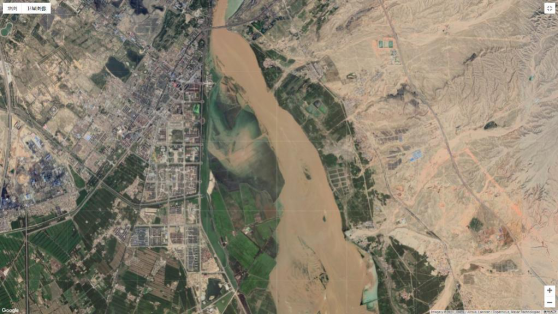
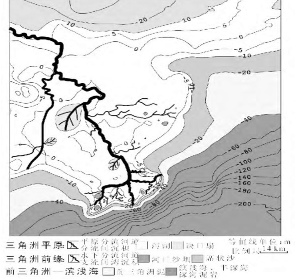

潮控三角洲
特点：
潮控三角洲是指河流流入三角港或其他形状的港湾，是因为潮汐作用远大于河流作用而形成的。潮控的古三角洲前缘垂向层序的最大特征在于近顶部见有双向交错层、复合层理及再作用面构造等，以及潮汐砂坝及坝间水道沉积交替组成的特征。潮控三角洲的层序，由于其为破坏性三角洲，因此层序完整性较差。
形成形态：
在潮差很大的河口，形成潮控的港湾型三角洲，如现代科罗拉多三角洲，河口潮差高达 8m，碎屑物的分布明显受潮流的影响。涨潮和退潮期间出于分流河道中的反向水流，可能成为沉积物扩散能量的主要方式。在分流河道内及其朝海的方向上，沉积物可以被反复搬运沉积，形成一系列平行于潮流方向的线状或指状砂脊。
实例：
1、平沟矿区山西组潮控三角洲
潮控三角洲沉积出现在山西组下部即“中煤组” ,由灰白、灰色砂岩、暗色砂质泥岩及泥岩夹煤层组成 ,含煤 4层。 砂岩为细— 粗粒长石石英砂岩、石英砂岩 ,成分、结构成熟度较高 ,构成沉积层序的骨架。沉积构造以发育低角度的板状和楔状交错层理、双向交错层理、波状层理、透镜状层理及脉状层理为特征。 见生物潜穴和音叉状波痕。 沉积环境水介质受海水影响。 砂体展布不稳定 , ,砂体平面形态为多个不连续的指状砂坝。 反映了沉积物主要受涨、落潮汐水流的影响。
潮控三角洲平原分流间湾常因岸线推进而不断被充填变浅 ,潮汐作用减弱而利于植物繁衍生长 ,在适宜的条件下形成泥炭堆积。
潮控三角洲沉积垂向层序及沉积相组合由前三角洲、潮控三角洲前缘和潮控三角洲平原组成。潮控三角洲沉积是三角洲沉积物被潮汐水流破坏、改造的产物 ,潮汐沙坝、潮汐河道沉积构成了潮控三角洲的骨架 ,也是砂质沉积物的主要营造单元。潮汐水能改造是主要水动力条件 ,潮汐沉积发育是其典型标志。

2、密西西比河三角洲
根据沉积特征与沙体分布, 将三角洲划分为三角洲平原、三角洲前缘和前三角洲三个亚相, 并作出了其沉积微相图

1 ）三角洲平原
三角洲平原是三角洲的水上部分, 地势低平, 分布在海拔深度值0 ~ 10 m之间, 平均坡降为0. 000 1, 整个平原地区平均海拔高程 ( 相对于平均海平面) 为1 m。三角洲平原纵向长度 ( 垂直于海岸线方向) 为120 km, 其中, 伸出海面的鸟足状三角洲纵向长度为70 km, 横向长度为28 km。三角洲平原沉积微相主要发育平原分流河道、分流间、泻湖和决口扇。
( 1) 平原分流河道
以密西西比河为干流的平原分流河道十分发育, 约250 多条支流, 其中最主要的支流有俄亥俄河、密苏里河、阿肯色河等, 在三角洲平原上构成了不对称树枝状体系 ( 图1) 。以伸出海面的局部三角洲平原分流河道为例 ( 图3) , 河道可划分为两级: 一级为主河道, 有1 条; 二级河道4 条。分支河道在三角洲前端表现为“足指头”形状, 平均纵向距离20 km, 其中, 西部分支最长可达25 km, 河宽均70 m; 而东部前端较短, 只有18 km, 河宽均40 m。河道平均水深为0 m, 流速3 ~ 15 m/s。
三角洲平原地区属亚热带湿润气候, 降雨量丰富, 平均年降雨量在1 200 mm以上, 河口平均年径流量为5 800×108m3, 年均输沙量4. 95×108t。河流沉积主要以细沙为主, 沙粒由于河流长期搬运作用, 磨圆度较好。
( 2) 分流间
分流间主要是由于季节性降雨或者洪水形成的泛滥沉积, 分布面积广。沉积物主要以泥质为主, 含少量粉沙沉积。
( 3) 泻湖
泻湖分布于平原分流河道之间的洼地 ( 图3) , 主要是由于前期分流河道废弃遗留下来的河口坝等造成遮挡条件而形成的。泻湖长21 km, 宽10 km, 水深2 ~ 5 m, 以泥质沉积为主, 含少量粉沙及生物碎屑。由于河流的改道、消亡等原因, 导致泻湖沉积容易发生间断, 沉积厚度很薄。
( 4) 决口扇
由于季节性洪水泛滥, 导致在河道天然堤低处溢出或天然堤决口, 在堤的下坡形成的扇状堆积物。近百年以来, 密西西比河曾发生了37 次重大洪灾, 导致发育了大量决口扇 ( 图3) , 决口扇沉积以泥质粉沙为主, 面积最大可达4 km2[16]。
2） 三角洲前缘
三角洲前缘是处于平均低水位的海平面与平均低水位时期的正常浪基面之间的部分。本文将其划分在海拔深度等值线标注的-40 ~ 0 m之间。该地区海洋作用较弱, 沉积水体环境稳定, 沙滩广布, 三角洲前缘纵向宽度最大20 km ( 西部前缘) 。三角洲前缘沉积微相主要发育水下分流河道、支流间湾沉积、河口沙坝和席状沙。
( 1) 水下分流河道
水下分流河道是平原分流河道在水下的延续, 在等值线图上表现为向陆地海拔高值微凸起。由于河流水动力很强, 导致水下分流河道发育, 延伸距离可达15 km。沉积水体环境稳定, 碎屑沉积物经过长距离搬运后堆积, 以细沙沉积为主, 分选性好, 磨圆度高, 厚度大。
( 2) 支流间湾沉积
支流间湾沉积是鸟足状三角洲特有的一种沉积微相[17], 发育在水下分流河道之间。由于河流作用很强, 导致分支河道和河口沙坝向前推进速度很快, 沉积物还未等到海洋波浪、沿岸流的搬运作用, 就被水下分流河道冲到了两侧, 在分支河道之间形成支流间湾沉积。以泥质沉积为主, 含少量粉沙和生物碎屑沉积, 发育水平层理。
( 3) 河口沙坝
河口沙坝主要分布在海拔深度值-5 ~ 0 m之间, 在海拔深度等值线上表现为向深海低值凸起, 沿垂直海岸线方向呈纺锤体状分布 ( 图3) 。由于河流作用较强, 携带的大量泥沙沉积物在三角洲前缘堆积, 导致河口沙坝十分发育。其中, 河口坝纵向长度介于1. 5 ~4 km, 横向长度在0. 5 ~2 km。以细粉沙沉积为主, 分选性好, 磨圆度高。由于多期叠置沉积, 导致厚度大。
( 4) 席状沙
席状沙分布在河口沙坝的前端, 无明显河流作用, 是海洋作用 ( 波浪、沿岸流) 下将部分河口沙坝的沙沿海搬运沉积形成的。海拔深度等值线为-20 ~ -10 m, 其纵向长度可达0. 7 km, 以粉沙沉积为主。研究发现席状沙在河口沙坝前缘呈舌状凸起, 而非条带状或席状。
3 ）前三角洲
以海拔深度值在-40 ~ 20 m之间区域作为前三角洲, 以暗色泥岩沉积为主。由于河流作用相对于海洋作用较强, 携带的大量泥沙在前缘沉积, 形成的前三角洲泥分布范围较广, 厚度较大。
3、其他潮控三角洲
海底沉积物在潮流作用下从侵蚀区向堆积区运动, 形成了活动底形和海底活动层
中国邻近海域有6个现代潮流沉积体系——黄海东部潮流沉积体系 、渤海东部潮流沉积体系 、长江口外潮流沉积体系、台湾滨外潮流沉积体系和琼州海峡潮流沉积体系,以及由东海潮流沙脊群和沙席组成的中国东海陆架潮流沉积体系。全新世浅海陆架潮流沉积模式可分为海峡——浅滩型和一般浅滩型两种
潮流对海岸形态和结构有较大影响, 特别是对淤泥质和砂质 、粉砂质海岸的沉积物有显著作用。 在平坦海岸带,潮水的涨落影响到相当宽阔的范围,对沉积物有反复的侵蚀 、搬运和再沉积的作用, 控制着沉积物的性质和特征 ;在狭窄的河口地带,潮流的侵蚀搬运作用特别强烈 ,河口被强烈冲刷 ,河口向外海呈漏斗状展开, 如钱塘江、恒河、亚马孙河等河口即为强潮形成的三角港 ;河流在具有中高潮差的海岸区入海,如果河流和波浪作用较弱 ,则可能形成潮流作用为主的潮流三角洲 。恒河-布拉马普特拉河、尼日尔河、巴布亚湾等都为潮控三角洲区。
中国陆架现代潮流沉积体系
1.黄海东部潮流沉积体系
黄海东部潮流沉积体系由西朝鲜湾潮流沙脊和其南部的沙席两者组成，总面积超过8万平方千米，这里有世界上最典型的潮流沉积，尤其是西朝鲜湾，数十条沙体平行排列，组成规模宏大的水下梳状沙脊场。其南部为大片的潮流沙席，从图1可见黄海东部是强潮海区，北部以往复潮流为主，最大潮流流速2—3节，椭率绝对值为0.2或更小，南部除局部海湾以往复潮流为主外，大多以旋转潮流为主,最大潮流流速1-2节,椭率绝对值为0.4-0.8。
2.渤海东部潮流沉积体系
渤海东部潮流沉积体系由老铁山水道冲刷槽,辽东浅滩沙脊和渤中浅滩沙席三者组成，面积为1.1万平方千米,是我国海城最完整而典型的潮流沉积体系渤海海峡位于黄渤海交界处，是我国陆架上的强潮海城之一,老铁山水道最大潮流流速超过5节。冲刷深槽在海峡处星东西方向，进入渤海后向北偏转，60m等深线长88km,最大水深86m,这与图1M2分潮椭圆长轴方向一致。浅地层剖面仪资料(刘报夏等，1994;夏东兴等，1995)表明，全新世潮流的冲刷深度为10--45m,冲刷下来的物质被潮流带入渤海，在浅滩处堆积,形成辽东浅滩潮流沙脊和渤中浅滩潮流沙席。辽东浅滩位于老铁山水道西口的北部,水深10--36m.6条沙体呈指状排列，长9--43km(20m等深线长)，中间4条基本呈南北方向。该区表层最大流速为1.3-2.3节，M2分潮平均椭率为-0.26,潮流往复性强。渤中浅滩位于辽东浅滩南面,水深为20--40m。表层最大流速为1.2--1.6节, M2分潮平均椭率为-0.45,潮流旋转性强。辽东浅滩和渤中浅滩全新世最厚海相层分别为26m和20m,均为渤海中除黄河口外全新世沉积最厚和沉积速率最快海区,估算最大沉积速率为3mm/a左右(刘振夏等，1994)。
3.长江口外潮流沉积体系
长江口外潮流沉积体系由江苏滨外潮流沙脊和长江口浅滩潮流沙席组成。由于受强大的东南来向的太平洋潮波系统的控制，形成了总面积为5万平方千米左右的大规模潮流沉积体系(Liu, 1997).江苏滨外潮流沙脊位于江苏省以东30m水深以浅的苏北浅滩，由70多个沙体组成南北长200km,东西宽90km的大型沙脊场。单个沙体最长超过100km,与欧洲北海最长沙脊52km相比，真可谓世界之最。受太平洋潮波和黄海旋转潮波的共同影响，沙体以弥港为顶点呈辐射状分布。值得注意的是M2潮流椭圆长轴也以琼港为顶点向外呈放射状(图1).该区平均大潮流速2节左右，椭率绝对值小于0.4,潮流往复性强。长江口浅滩潮流沙席位于现代长江水下三角洲的东面，水深25-55m,东西宽270km,南北长200km,面积约3万平方千米;,与西欧潮汐海最大沙席面积2万平方千米相比，也可视为世界之最。最大涨落潮流速在1.0--2.4节, M2分潮椭率小于-0.70,椭圆接近于圆，是东海M2分湖大椭率区，全新世海相层厚8-25m。
4.台湾滨外潮流沉积体系
台湾滨外潮流沉积体系位于台湾岛与大陆之间，包括台湾海峡冲刷槽和台湾浅滩沙脊，以及东面的澎湖水道冲刷槽和其北的台中浅滩沙席,实际上是由涨落潮流分别形成的潮流沉积体系，总面积接近5万平方千米.台湾海峡呈NNESSW向延伸，水城��，深一般为50--60m,湖流流速2- 3节。台湾浅滩位于台湾海峡南部，由于主要受落潮流输沙局部变化的影响，沙脊多成"S"形，类似北海南部的诺福克沙脊。澎湖列岛与台湾岛之间的澎湖水道.受断裂构造和潮流的双重作用,形成深近100m的狭长水道，其北端出口(即澎湖列岛北面)为水深9.6--40m的台中浅滩，是受涨潮流控制的潮流沙席。
5．琼州海峡潮流沉积体系
琼州海峡潮流沉积体系由琼州海峡冲刷槽、东浅滩沙脊和西浅滩沙脊三者组成。琼州海峡为南海潮流最强的地区,海峡中部表层流速大于6节,底层流速大于4节。海峡正位于雷琼拗陷带,东西向断裂构造控制了海峡的基本轮廓.在内外营力的共同作用下,形成东西长约80km,南北宽近30km.最深120m的冲刷深槽. 粗略估计，全新世潮流的冲刷深度为40-90m。琼州海峡的东西出口处，因流速下降至3节或更小，物质堆积，形成潮流浅滩。东浅滩沙脊受落潮流控制,形成内外两组近10条短小沙体;西浅滩沙脊受涨潮流控制，形成三条较长的沙体。
参考文献
[1]殷茵. 潮控三角洲相油藏精细描述及剩余油分布特征研究[D].中国地质大学（北京）,2007.
[2]郭英海,刘焕杰,贾进华.平沟矿区山西组潮控三角洲—河流沉积及聚煤特点[J].煤田地质与勘探,1998(05):3-5.
[3]刘锐,印萍,肖菲.潮流沉积与环境效应——第七届国际潮流沉积学大会会议综述[J].海洋地质与第四纪地质,2009,29(01):115-120.
[4]谢启红,邵先杰,孙庆宇,接敬涛,张珉,时培兵,霍梦颖.基于Google Earth软件的密西西比河现代三角洲沉积特征解剖[J].河北工程大学学报(自然科学版),2016,33(01):108-112.